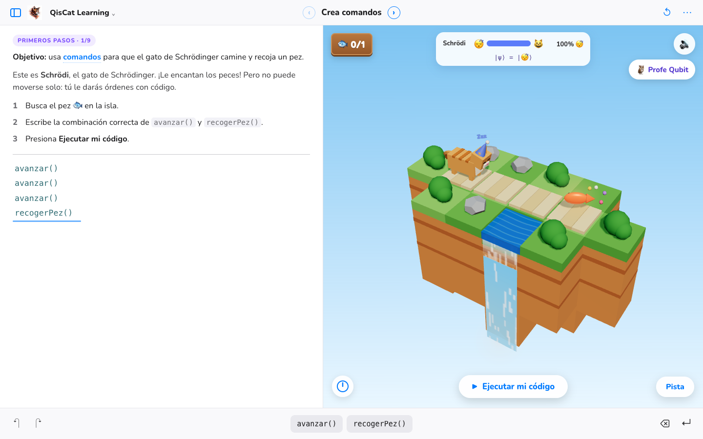
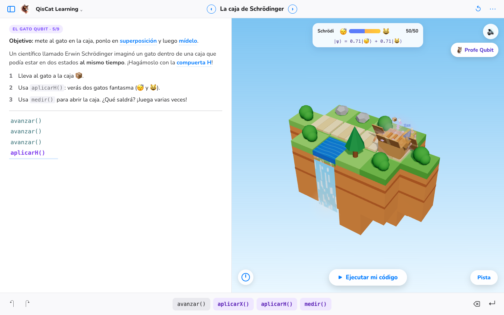
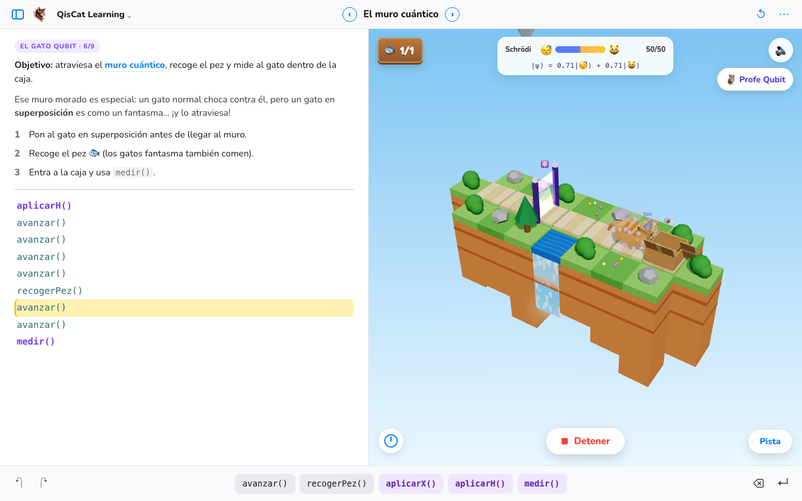
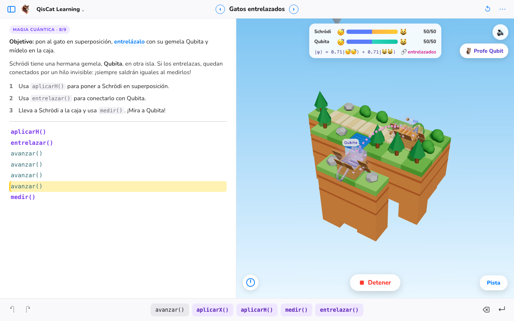
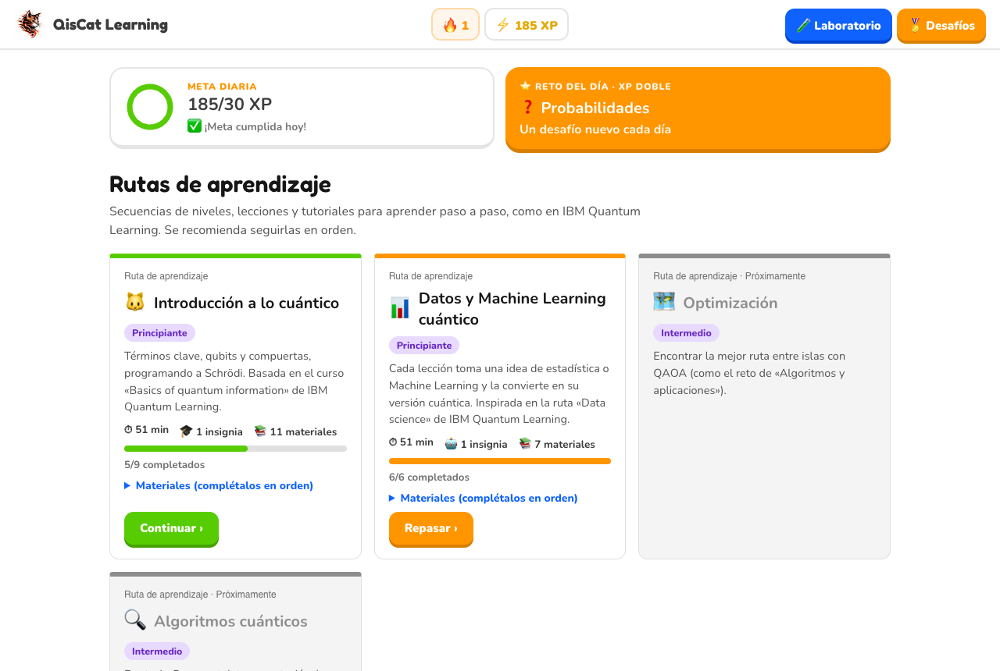
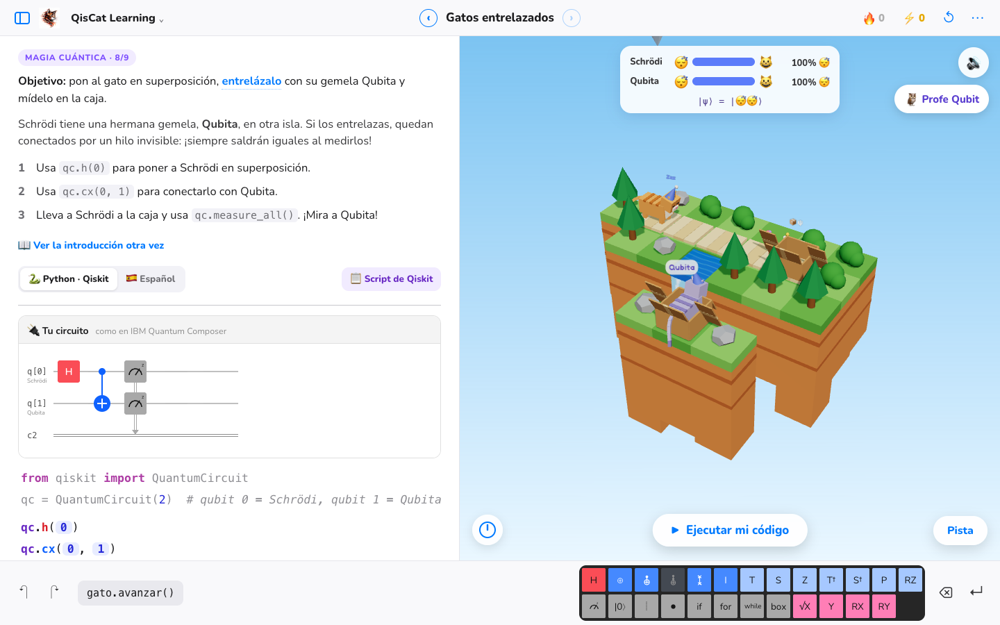
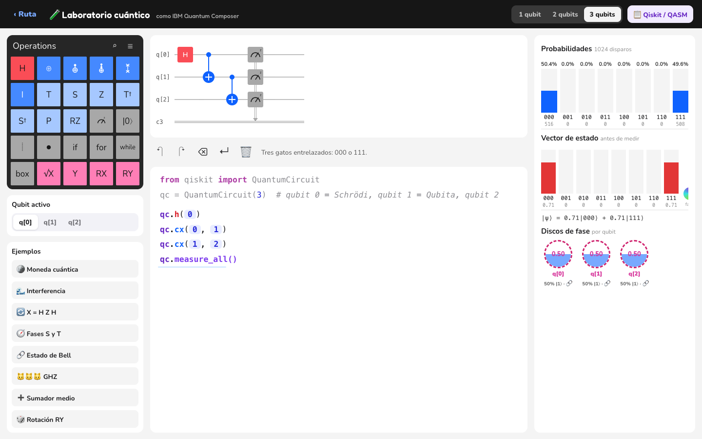
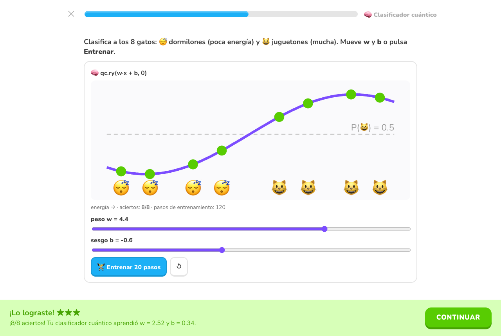
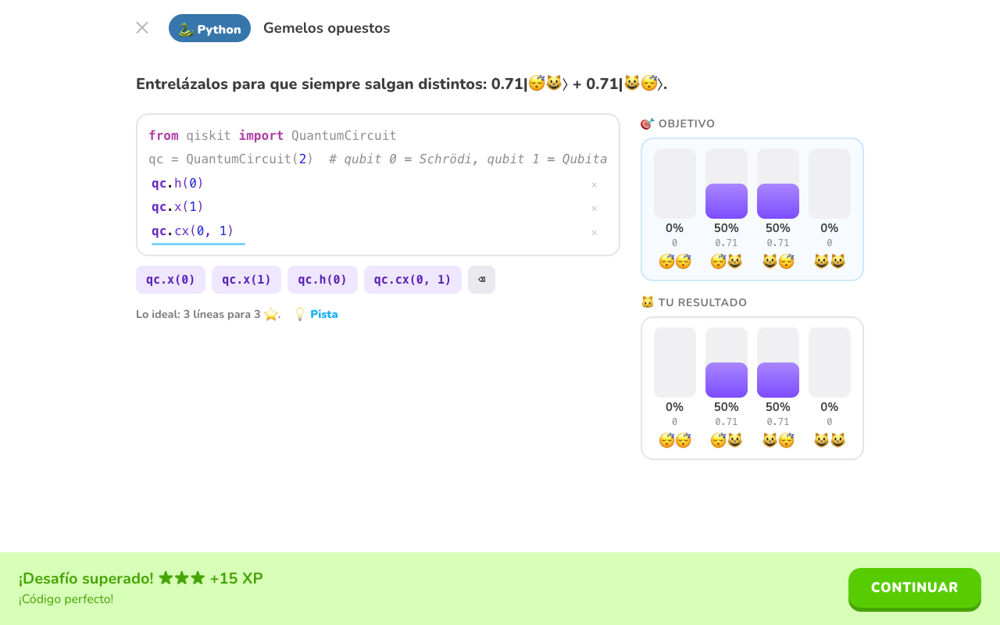
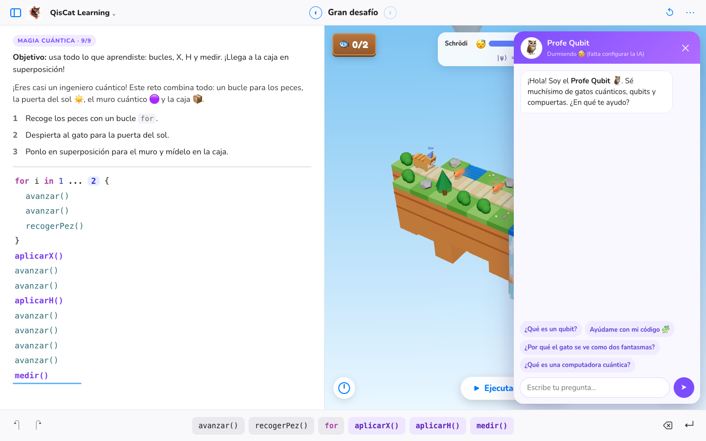

Programa
Usa avanzar(), girarDerecha() y bucles for para llevar al gato hasta los peces.
Espera mientras Schrödi decide si está dormido o despierto…
Programa al gato de Schrödinger y descubre los secretos de las computadoras cuánticas
Escribe código tocando comandos, como en Swift Playgrounds, y mira a Schrödi moverse por islas flotantes en 3D.

Usa avanzar(), girarDerecha() y bucles for para llevar al gato hasta los peces.

La compuerta aplicarH() convierte a Schrödi en dos gatos fantasma: dormido y despierto a la vez.

Los muros cuánticos solo dejan pasar gatos en superposición. ¡Como el efecto túnel de verdad!

Conecta a Schrödi con su gemela Qubita: al medirlos, siempre salen iguales.
Rutas de aprendizaje como IBM Quantum Learning, la paleta del Composer, código real de Qiskit y hasta Machine Learning cuántico. Todo en el navegador y pensado para niñas y niños.

Rutas con niveles, lecciones y tutoriales en orden, como en IBM Quantum Learning. Meta diaria, reto del día con XP doble, racha 🔥 e insignias.

Las 25 operaciones de IBM Quantum Composer: H, CNOT, T, RX… El circuito se dibuja mientras escribes y se exporta a Qiskit y OpenQASM.

En el Laboratorio creas circuitos libres de hasta 3 qubits y ves probabilidades con 1024 disparos, el vector de estado y quién está entrelazado.

Probabilidad, Monte Carlo, descenso de gradiente, un clasificador y un kernel cuántico: cada idea de datos con su versión cuántica y su código Qiskit.

Retos de Python con Qiskit, quizzes y bloques tipo Scratch que se desbloquean al avanzar. ¡Usa el mínimo de líneas para ganar 3 ⭐!
El gato está en superposición dentro de la caja. Nadie sabe cómo está… hasta que la abres.
Ábrela muchas veces: saldrá la mitad de cada uno. ¡Así funciona la medición cuántica!
Ideas de verdad de la física cuántica /kuán·ti·ka/, explicadas con un gato, una caja y muchos peces. Cada concepto es una página del juego.

Un búho tutor con inteligencia artificial que sabe muchísimo de qubits. Ve tu código y el estado del gato, y te da pistas sin regalarte la respuesta.
Explica con monedas, olas y gemelos, en palabras sencillas y siempre en español.
Conocer al ProfeGratis, en el navegador, en computadora, tablet o celular.